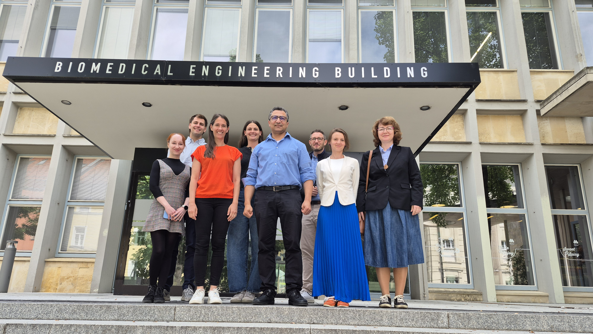

Project kick-off meeting brings partners together in Kleve
Representatives from Hochschule Rhein-Waal, TU Graz, and the Institute of Experimental Medicine CAS met to align work packages, agree on fabrication protocols, and plan the first round of biological validation experiments.
Read more